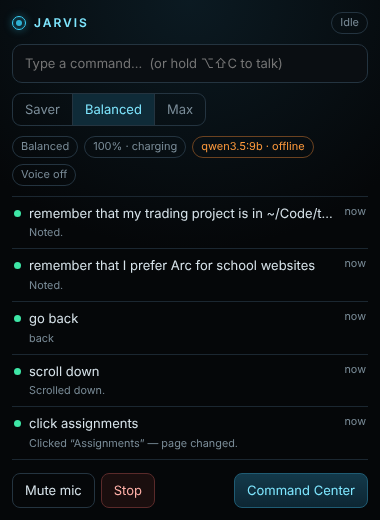
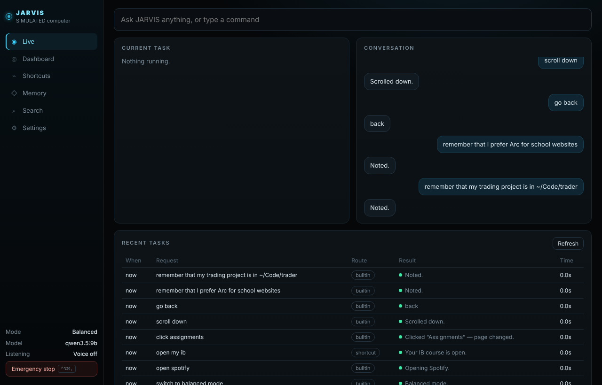
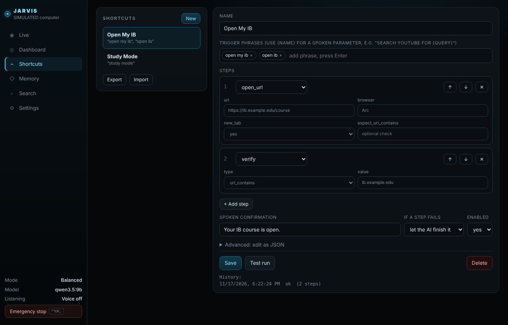

JARVIS is a personal assistant that lives in your Mac’s menu bar. You talk to it, it answers out loud, and it actually operates your computer: it opens apps, navigates websites in your own Arc browser, clicks and types, reads pages back to you, finds and organizes files, and remembers what you tell it.
Everything that makes it intelligent runs on your MacBook. That covers the wake word, speech recognition, its voice and the language model that reasons and plans. After the one-time setup it does not use Claude, the Anthropic API, any cloud AI or any paid service, so it keeps working after December 5, 2026 and offline. The internet is used only for things you ask it to do online, like opening a website.
Every request goes to the cheapest level that can handle it reliably:
JARVIS keeps context for about 10 minutes: the app and web page you’re on, what it just did, the last list of results and the recent back-and-forth. That is why “Open my IB” → “Go to the assignments” → “Open the most recent one” works without repeating yourself. After it answers, it listens for a few seconds for a follow-up without needing the wake word. A new instruction replaces whatever it was doing, and “stop” halts everything.
| Component | What it does |
|---|---|
| JARVIS.app (native) | Menu-bar icon and popover, floating HUD, command center window, the global hotkeys, sleep/wake and power-source detection, launch at login. Starts the background service and restarts it if it crashes. |
| Background service | The brain: routing, shortcuts, the agent, voice, memory, search, power management. Talks to the app over a private, password-protected connection on your Mac only. |
| Ollama (free) | Runs the local language models and loads and unloads them on demand. |
| Your Mac’s own frameworks | Arc (AppleScript), Accessibility, Vision (text recognition), Spotlight, Shortcuts app. |
About 30–60 minutes, mostly downloads (~10 GB). Internet is needed only for setup. These steps are also in
START_HERE.md in the repository.
brew --version already works). It asks for your Mac password and also installs Apple’s Command Line Tools.
/bin/bash -c "$(curl -fsSL https://raw.githubusercontent.com/Homebrew/install/HEAD/install.sh)"When it finishes it prints two “Next steps” lines (
echo … >> ~/.zprofile and eval …). Run those two lines.git clone --branch claude/project-jarvis-ai-assistant-rddtrw https://github.com/arnavhiteshpatel-cloud/sandbox.git ~/JARVIS
cd ~/JARVIS && ./scripts/install.shIf the build stops with a Swift compiler error, open a Claude Code session in
~/JARVIS and give it the error. That
part could not be compiled before it reached your Mac./Applications/JARVIS.app/Contents/Resources/python/bin/python3 -m jarvis doctor for a full health check. Logs are in
~/Library/Logs/JARVIS/. If JARVIS says it can’t reach its AI model, open the Ollama app. Shortcuts and built-in commands keep
working without it.| To… | Do this |
|---|---|
| Talk (any time) | Hold ⌥⇧C, speak, release. (⌃⌥C until Accessibility is granted.) |
| Talk hands-free | Say “Hey JARVIS” when the Mac is plugged in. On battery the wake word is off to save power, by your choice. |
| Continue the conversation | Just keep talking for ~6 seconds after a reply. No wake word needed. |
| Interrupt it while speaking | Hold ⌥⇧C or say “Hey JARVIS”. It stops talking and listens. |
| Stop everything immediately | ⌃⌥⌘. (Control-Option-Command-Period), say “stop” or “never mind”, press Esc in its window, or use the menu. |
| Answer its questions | Say “yes”/“no” (or the answer), or click Yes/No on the HUD pill. |
| Type instead of talk | Click the menu-bar icon and type in the box. |
| See what it’s doing | Menu-bar icon → Command Center → Live: each step, result and timing. |
| Change power mode | Say “switch to battery saver mode”, or use the popover’s Saver / Balanced / Max buttons. |
| Mute the microphone | Say “stop listening”, or popover → Mute mic. Holding the talk key still works. |


| Feature | Details |
|---|---|
| Wake word | “Hey JARVIS” (openWakeWord hey_jarvis model). Active only on AC power by default. Options: always, AC only, except Battery Saver, never. Adjustable sensitivity. A silence filter skips the neural network while the room is quiet. |
| Push-to-talk | Hold ⌥⇧C, works in every power mode. Records exactly while held. |
| Speech recognition | Whisper on-device. large-v3-turbo on the M4 Pro GPU (Balanced/Max) or small (Battery Saver). Primed with your shortcut names and common terms (JARVIS, Arc, IB, Canvas). Filters Whisper’s known phantom phrases on silence. |
| End-of-speech detection | Stops recording after ~0.75 s of silence (adjustable), with a 15 s maximum. Cancels if you say nothing. |
| Voice | Kokoro neural voice, default George (British male, composed). Nine alternatives (British/American, male/female), adjustable speed, preview button. Falls back to macOS’s built-in Daniel voice. |
| Speaking style | Simple commands get a short functional reply (“Opening Spotify.”). Complex, multistep or conversational requests get a polite, dry-witted, JARVIS-like reply that occasionally says “sir”. No markdown or URLs read aloud. |
| Fast replies | Speech starts after the first sentence is synthesized while the rest is still being generated. |
| Follow-ups | Hands-free listening window after each reply (default 6 s, adjustable, can be turned off). |
| Questions and confirmations | JARVIS can ask you something mid-task (“What’s the web address?”, “Shall I submit?”) and take your answer by voice or a click. |
| Interruption | Just start talking over it (it tells your voice apart from its own echo), or press Esc, the talk key or the wake word. It stops mid-sentence and listens. A new instruction replaces the current task. |
| Progress updates | For tasks longer than ~8 s it says brief progress lines (“Reading the page.”), at most every 25 s. |
| Privacy controls | Mute mic, choose the microphone, chime on/off. Audio is never saved to disk. |
| Offline | All voice processing works without internet. |
Recognized by plain code, with no AI model and a near-instant reply. Variations are tolerated: “could you…”, “please”, “Hey JARVIS” prefixes, “I.B.” or “i b” for “IB”.
| Say… | Effect |
|---|---|
| “Open / launch / start Spotify” | Opens any installed app (fuzzy name matching, e.g. “VS Code”), verifies it launched. |
| “Switch to / show Notes” | Brings the app forward. |
| “Quit / close Spotify” | Quits the app and verifies. |
| “Go to youtube.com”, “open wikipedia dot org” | Opens the site in your browser and waits until it has loaded. |
| “Open name” for a site you told it to remember | Opens that saved website. |
| “Click assignments”, “go to the grades tab” | Finds the link or button on the current page and clicks it, but only if the match is unambiguous. Otherwise the AI takes over. |
| “Scroll down / up”, “scroll to the top / bottom”, “page down” | Scrolls the page (including inner panels) or, in other apps, the front window. |
| “Go back”, “go forward”, “refresh”, “new tab”, “close this tab” | Browser navigation. |
| “Type Hello, world” | Types the text (keeps capitals and punctuation). |
| “Press command T” | Presses that key combination. |
| “Volume up / down”, “set volume to 30”, “mute”, “unmute” | System volume. |
| “Lock my screen”, “turn off the display” | Locks the Mac / sleeps the display. |
| “What time is it?”, “What’s the date?”, “What’s my battery?” | Spoken answer. |
| “Switch to battery saver / balanced / max performance mode” | Changes power mode. |
| “Remember that …”, “What do you remember about …”, “Forget …” | Saves, recalls or deletes a memory. |
| “Create a shortcut called …”, “Whenever I say X, do Y” | Starts the shortcut-creation conversation. |
| “List my shortcuts”, “Delete the shortcut called …” | Lists them, or deletes one after you confirm. |
| “Pause”, “play”, “next song”, “previous track” | Controls whatever is playing, in any app. |
| “Play lo-fi beats on Spotify” | Searches Spotify and plays the top result. |
| “Brightness up / down”, “make the screen dimmer” | Display brightness. |
| “Turn on dark mode”, “switch to light mode” | Appearance. |
| “Turn Wi-Fi on / off” | Wi-Fi (asks before turning it off). |
| “Open Bluetooth / sound / display / battery… settings” | Opens that System Settings pane. |
| “Take a screenshot” | Saves the screen to your Desktop. |
| “Minimize this window”, “full screen”, “hide Spotify”, “new window”, “close this window”, “show the desktop”, “Mission Control” | Window control in any app. |
| “Make a note saying …” | Creates an Apple Note. |
| “Remind me to … at 5 / tomorrow at 9am / in 20 minutes” | Creates a Reminder with that time. |
| “What’s on my calendar today / tomorrow / this week?” | Reads your events. |
| “Find my biology document”, “where is my resume” | Instant file search: says how many and names the top match (file, folder, date). |
| “Open it”, “the next one”, “open the second one / last one” | Acts on the last results. “It” is never mistaken for an app. |
| “Look up …”, “google …”, “find out …” | Searches the web in the background and answers in one or two sentences, naming the source. |
| “Stop listening” | Turns the microphone off. The talk key still works. |
| “Stop”, “cancel”, “never mind” | Halts the current task and speech immediately. |
Your own spoken phrases that run a saved sequence of actions instantly, without AI. Each shortcut has a name, one or more trigger phrases, ordered steps, an optional spoken confirmation, and a rule for failures: let the AI finish it (default), stop and tell me, or skip and continue.
| Step | What it does |
|---|---|
| open_url | Open a web address in Arc (or another browser), new tab or current, wait until loaded, verify where it landed (detects login redirects). |
| open_app · focus_app · quit_app | Launch, bring forward or quit an app. |
| browser | Back, forward, reload, new tab, close tab. |
| click · type · keys · scroll · menu | Click a named button/link (page or app), type text into a named field (optionally submit), press a key combo, scroll, choose a menu item (“File > New Window”). |
| wait · wait_for · verify | Pause, or wait for/check: page ready, address or title contains, text on page, element present, app running/frontmost, file exists. |
| if | Run different steps depending on a condition. |
| run_shortcut · set | Call another shortcut (with parameters); set a variable. |
| agent | Hand an unpredictable step to the AI (“find the newest announcement”). |
| open_file · reveal_file · move_file | Open a file (optionally in a given app), show it in Finder, move it (never overwrites). |
| arrange_windows | Tile apps: halves, thirds, columns, maximize, left, right. |
| macos_shortcut | Run a Shortcuts-app shortcut, e.g. to turn on Do Not Disturb/Focus (macOS has no other way). |
| volume · say · notify | Set volume; speak a sentence; show a notification. |
| media · system · note · reminder · open_location | Media keys; dark/light mode, Wi-Fi, Settings panes, screenshots, window actions; create a note or a timed reminder; open any URL scheme (e.g. join a Zoom meeting). Lets “study mode” pause music, switch to dark mode and tile your windows. |
| applescript · shell | Run a script or command. Allowed directly only in shortcuts you wrote in the editor. Ones created by voice, AI or import ask you first. Shell commands outside a short read-only allow-list always ask. |
For anything not covered by built-ins or shortcuts, the on-device model (Qwen3.5) works through the task in a bounded loop: observe → decide one step → act → verify → continue. It doesn’t guess a long chain of clicks up front.
| Area | Tools |
|---|---|
| Seeing | observe (page or app: address, visible text, interactive elements) · read_page (full page text) · look_at_screen (screenshot interpreted by the model, or Apple’s text recognition) |
| Acting | open_app · open_url · click (by element or text) · type_text · press_keys · scroll · browser_nav · menu · click_screen_text (via on-screen text) · click_visual (computer vision) · calculate (exact math) · wait |
| Files | search_files · list_folder · read_file (PDF, Word, PowerPoint, Excel, text, code) · move_file · make_folder · find_duplicates · trash_files (always confirms; uses the Trash, never permanent delete) |
| Any app and the system | app_dictionary (what an app can be scripted to do) · script_app (AppleScript/JavaScript; risky scripts ask first) · media · system (dark mode, Wi-Fi, Settings panes, screenshots, window actions, URL schemes, lock) · create_note · create_reminder · calendar · compose_email (draft only) · send_message (always asks) |
| Internet (invisible) | web_search (DuckDuckGo → Bing → Wikipedia, no account) · read_webpage. Lookups run in the background and never open your browser; Arc is used only when you want to see a page or it needs your login. |
| You and memory | ask_user · remember · recall · run_shortcut · done |
Pull up a practice assignment, a worksheet, a quiz or a form and say “do it” (or “complete this”, “fill this out”, “answer these questions”). JARVIS works through the whole thing on its own and stops right before handing it in.
| Detail | How it works |
|---|---|
| Interacting, not just reading | It operates the real page or app: text fields, dropdowns (chosen by their visible label), radio buttons, checkboxes, Next buttons, and documents or rich editors (Google Docs, Word, Pages, Canvas answer boxes) using real keystrokes when direct filling doesn’t take. |
| Computer vision | When questions or answer boxes exist only as an image, PDF or canvas, it reads them from a screenshot and clicks by describing what to click (“the answer box under question 3”), then checks the result. |
| Looking things up | Facts it isn’t sure of are looked up in the background (never on your screen). All arithmetic goes through an exact calculator. |
| Thinking | Uses the careful “thinking” mode (except in Battery Saver), with a larger step budget (up to 100 steps, 30 min when plugged in). |
| Never hands it in | Submit / Turn in / Finish / Complete-quiz buttons always ask you, even though you said “complete this”. It ends with a summary: how many items it did, which answers it’s unsure about, and that it’s ready for your review. Esc or “stop” halts it at any time. |
| Say… | Effect |
|---|---|
| “Type Dear Ms Smith, thank you…” | Types your exact words where the cursor is, in any app. |
| “Take dictation” … “stop dictation” | Everything you say in between is typed. Say “comma”, “period”, “new line”, “new paragraph”. |
| “Write a paragraph about photosynthesis” | Composes the text with the local AI and types it where the cursor is; tells you the word count. |
Typing only happens when the cursor is in a text field. Otherwise JARVIS asks you to click where the text should go, so keystrokes never trigger shortcuts in other apps. Long text is pasted quickly and your clipboard is restored afterwards.
JARVIS isn’t limited to Arc. Every app is reachable, and nothing is blocked. For each request it picks the most reliable way in:
| Area | What JARVIS can do |
|---|---|
| Any app | Open, quit, switch to, hide; read its window (buttons, fields, lists, text) and press, fill or select things by name; choose any menu-bar command (“File > Export…”); type, press shortcuts, scroll, click. Chromium/Electron apps are asked to expose their full interface. The same follow-ups work everywhere: “scroll down”, “go back”, “new tab”, “close tab”, “new window”. |
| Scriptable apps | The AI reads an app’s scripting dictionary, then controls it directly (e.g. tell application "Music" to play playlist "Focus"),
which is faster and more reliable than clicking. Tested with the real model. |
| Your browser | Drives your real Arc (stays logged in to school portals): tabs, navigation, waiting for pages, reading text, every clickable element (including inside web components), clicking, filling modern web forms, scrolling the right panel. Also Chrome, Brave, Edge and Safari. |
| Notes · Reminders · Calendar | Create notes; create reminders with times (“at 5”, “tomorrow at 9am”, “in 20 minutes”); read today’s, tomorrow’s or this week’s events. |
| Mail · Messages | Open an email draft with recipients, subject and body (never sent by itself). Send an iMessage to a contact, number or email, always after your “yes”. |
| Media | Play/pause, next, previous for whatever is playing (Music, Spotify, a video in a browser); “play … on Spotify” searches and plays the top result. |
| System | Volume and mute, brightness, dark/light mode, Wi-Fi on/off, open any Settings pane (“open Bluetooth settings”), screenshots to the Desktop, lock screen, display sleep, battery status, notifications, Shortcuts-app shortcuts, any URL scheme (spotify:, zoommtg:…). |
| Windows | Minimize, full screen, hide, new or close window, show desktop, Mission Control, tile apps side by side. |
| Keyboard, mouse, screen | Any key combination, typing any text (including emoji), clicks, scrolling; screenshots (deleted right after use), on-device text recognition with positions, and visual questions answered by the model. |
| Files | Open, reveal, read, move, rename, organize, find duplicates, move to the Trash (with confirmation). See section 10. |
What can’t be operated: games, remote-desktop windows, canvas-only apps and secure password fields. If an app refuses automation, JARVIS says so.
| Battery Saver | Balanced | Max Performance | |
|---|---|---|---|
| Used automatically | on battery ≤ 30% | on battery | plugged in |
| AI model | Qwen3.5 4B, unloaded 30 s after use | Qwen3.5 9B, kept 5 min | Qwen3.5 9B with deeper thinking, kept 30 min |
| Speech recognition | Whisper small | Whisper large-v3-turbo | Whisper large-v3-turbo |
| Agent limits | 8 steps | 20 steps | 40 steps |
| Screenshot understanding | off (text recognition only) | on | on |
| Preload AI on wake word | no | yes | yes |
| File indexing | never | while charging | while charging |
| Animations | none | normal | full |
javascript:/file: links or overwrites files.Dark, minimal and HUD-inspired: deep charcoal, cyan highlights, orange only for warnings and questions. Animations run only while JARVIS is active and turn off in Battery Saver or with Reduce Motion.
| Part | What’s there |
|---|---|
| HUD pill | Top-center, only while active: status light (cyan listening, blue thinking, orange question), what you said, what it’s doing, Yes/No buttons. |
| Menu-bar popover | Status, command box, power-mode switch, model and battery chips, recent tasks, Mute, Stop, Command Center. |
| Right-click menu | Command Center, power mode, mute, emergency stop, Launch at Login, restart service, quit. |
| Command Center | Live (current task step by step, conversation, recent tasks, activity log) · Dashboard (status orb, power, model, voice, files, quick shortcut buttons) · Shortcuts (editor) · Memory · Search · Settings (power, voice, local AI, files, browser and safety, permissions). |

Full form: /Applications/JARVIS.app/Contents/Resources/python/bin/python3 -m jarvis doctor (likewise for the others; the power profiler needs sudo).
| Command (run in Terminal) | Purpose |
|---|---|
jarvis doctor | Confirms your hardware and macOS (M4 Pro, 24 GB, 15.7.3), battery health, packages, models, microphone and permissions. |
jarvis.acceptance | Walks through all 40 acceptance tests on the real app and records evidence to docs/ACCEPTANCE_RESULTS.md. |
jarvis bench | Compares local AI models on real JARVIS tasks (accuracy, consistency, speed) to choose or upgrade models. |
jarvis.powerprof | Measures real power (chip and whole-system battery drain) for 10 scenarios vs. a JARVIS-off baseline. |
jarvis.voice.selftest | Tests wake word → speech recognition → command understanding with real models, no microphone. |
JARVIS was developed in a Linux cloud environment with no access to your MacBook. Everything that could be tested there was tested for real. Everything that needs macOS is written but not yet run. No simulated result is counted as a pass.
| Area | Status | Evidence |
|---|---|---|
| Routing, shortcuts, agent loop, memory, safety, power logic | tested | 136 automated tests pass, including “open my IB” → “go to the assignments” → “scroll down” → “go back” with zero AI calls. |
| Arc page-control code (find, click, type, scroll, read) | tested | 8/8 in a real Chromium browser (the engine Arc uses). |
| Voice pipeline with real models | tested | 6/6: wake word detected for 4 different voices, no false triggers, exact transcripts, correct commands. Silence filter: 0 of 375 frames processed. |
| AI agent with a real local model | tested | Qwen3.5-4B: 11/11 JARVIS tasks plus 3/3 app tasks (reminder + calendar, scripting Music, message correctly held for confirmation), 0 invalid actions (one run per case, on a simulated computer). |
| File indexing and search | tested | Real files: relevance, recency, duplicates, exclusions, incremental updates. |
| Interface | tested | Rendered and checked in a browser (screenshots in this document). |
| Native Mac app (Swift) | partial | Passes the Swift syntax check; supervisor code type-checks. An independent review found 13 possible issues; 11 were fixed, and 2 low-confidence notes remain to check on the Mac. Full compile needs your Mac. |
| Arc via AppleScript, Accessibility, keyboard/mouse, screenshots | not run | Needs macOS. |
| Microphone, speaker, GPU speech recognition | not run | Needs macOS. |
| Power and battery measurements | not run | Needs your MacBook; profiler provided. |
| The 40 acceptance tests | 0 of 40 run | Runner provided; results will be recorded on your Mac. |
| Item | Value |
|---|---|
| Platform | Apple Silicon Mac, macOS 14+ (built for M4 Pro, 24 GB, macOS 15.7.3) |
| Language model | Qwen3.5 9B (Balanced/Max) and 4B (Battery Saver) via Ollama, Apache-2.0. One model handles both reasoning and screenshots. |
| Embeddings (meaning search) | EmbeddingGemma 300M via Ollama |
| Speech recognition | Whisper large-v3-turbo / small via MLX (Apple GPU), MIT |
| Voice | Kokoro-82M (int8), voice George; fallback macOS Daniel |
| Wake word | openWakeWord “hey_jarvis” (model CC BY-NC-SA 4.0, personal use) |
| App | Native Swift menu-bar app + Python 3.12 service embedded in JARVIS.app (~1 GB) + web interface |
| Disk | ~12 GB total including models |
| Memory in use | Idle: small (models unloaded). During AI tasks: ~7 GB for the 9B model, ~1.6 GB for speech recognition while loaded. |
| Your data | ~/Library/Application Support/JARVIS (database, settings, voice model) · logs in ~/Library/Logs/JARVIS |
| Cost | Free. All components are open source or free; no accounts or subscriptions. |
| Internet | Setup only (model downloads), plus whatever online tasks you ask for |
| Changing models | Settings → Local AI. Benchmark first with jarvis bench. Nothing else changes. |
START_HERE.md | The setup steps from section 3 |
docs/SETUP.md | Permissions, the IB shortcut, Do Not Disturb, updating |
docs/ARCHITECTURE.md | How the pieces fit, and how to extend JARVIS |
docs/MODELS.md | Model choice, benchmark results, upgrading |
docs/POWER.md | Battery design and how to measure it |
docs/TESTING.md · docs/LIMITATIONS.md | Test results and known limitations |
docs/JOURNAL.md | Decisions, status and next steps for future development sessions |